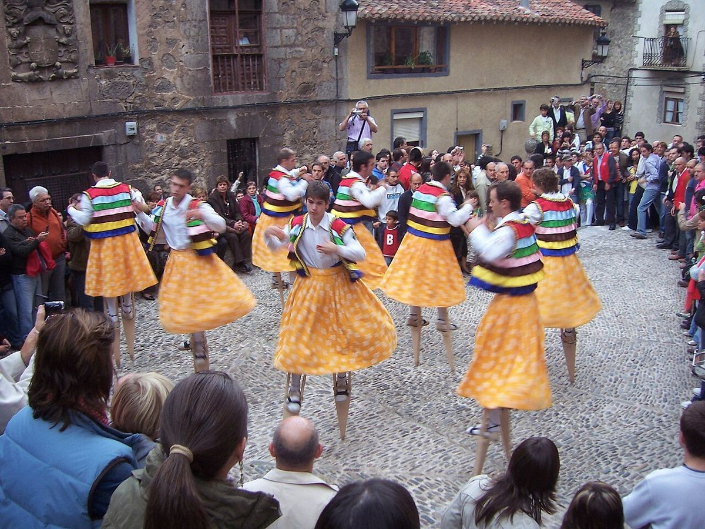

Quién no vota · Elecciones: mayo y julio de 2023
Los pueblos pequeños son los únicos que votan más para elegir alcalde que para elegir al Gobierno
En las ciudades se vota mucho menos en las municipales que en las generales: en las de más de 100.000 habitantes, un 61,6 % en mayo de 2023 frente a un 70,3 % en julio. En los pueblos de menos de 2.000 habitantes ocurre al revés. De los 5.821 municipios de ese tamaño, en 3.498 se votó más para elegir el ayuntamiento que para el Congreso; de los 420 de más de 20.000, solo en 4.
Dato: verificable y reproducible

La pregunta: ¿Dónde se vota más en las municipales que en las generales?
Dos elecciones en dos meses
DatoMayo y julio de 2023 ofrecen una comparación poco habitual: unas municipales y unas generales con solo ocho semanas de distancia. Los mismos municipios, casi los mismos censos y dos preguntas distintas: quién gobierna el pueblo y quién gobierna el país.
DatoEn el conjunto de España se votó más en julio (70,4 %) que en mayo (63,2 %). Pero la diferencia depende del tamaño del municipio. En las ciudades de más de 100.000 habitantes, la participación fue del 61,6 % en las municipales y del 70,3 % en las generales. En las de 20.000 a 50.000, del 59,7 % y del 68,8 %.
El punto de giro, en torno a los 2.000 habitantes
DatoA medida que el municipio se hace más pequeño, la distancia se cierra. En los pueblos de 2.000 a 5.000 habitantes las dos participaciones casi coinciden (71,8 % y 72,6 %). Por debajo de los 2.000, las municipales ganan: 78,5 % frente a 75,9 % en los de 250 a 500 habitantes.
DatoEn los pueblos de 250 a 1.000 habitantes, alrededor de dos de cada tres votaron más en mayo que en julio (67,4 % y 66,2 %). En las ciudades de más de 100.000, ninguna.
PatrónCuanto más cerca está el ayuntamiento, más se vota para elegirlo. En una ciudad, las municipales son una elección menor; en un pueblo pequeño, la que más se vota.
DatoEn los municipios de menos de 100 habitantes las dos participaciones son casi iguales (81,8 % y 81,1 %), y la mitad de ellos votó más en mayo y la otra mitad, más en julio.
Sobre el terreno
DatoUnos seis de cada diez municipios de España tienen menos de 1.000 habitantes, y en ellos vive en torno al 3 % de la población. Fuentes: 1, 2
Lo que no sabemos
- HipótesisPor qué. La cercanía a los candidatos, la ausencia de alternativa en muchos pueblos con una sola lista o la movilización vecinal son explicaciones plausibles que esta pieza no ha contrastado con dos fuentes.
Los datos
| Habitantes | Municipios | Municipales | Generales | % con más participación en municipales |
|---|---|---|---|---|
| <100 | 1.387 | 81,8 | 81,1 | 50,0 |
| 100-249 | 1.452 | 79,7 | 77,7 | 58,0 |
| 250-499 | 1.116 | 78,5 | 75,9 | 67,4 |
| 500-999 | 996 | 76,8 | 74,8 | 66,2 |
| 1.000-1.999 | 870 | 75,7 | 74,1 | 63,3 |
| 2.000-4.999 | 951 | 71,8 | 72,6 | 44,2 |
| 5.000-9.999 | 544 | 66,4 | 71,2 | 16,5 |
| 10.000-19.999 | 350 | 63,3 | 70,1 | 4,6 |
| 20.000-49.999 | 268 | 59,7 | 68,8 | 0,7 |
| 50.000-99.999 | 88 | 59,2 | 69,3 | 2,3 |
| 100.000+ | 64 | 61,6 | 70,3 | 0,0 |
Método y fuentes
- Qué se compara
- Los 8.086 municipios con datos de participación en las dos elecciones de 2023, agrupados por tamaño.
- Límites
- El censo de las municipales incluye a los residentes de la Unión Europea, que no votan en las generales y participan menos; eso rebaja algo la participación municipal, sobre todo en zonas turísticas. La participación de las generales es sobre el censo de residentes en España.
- Metodología completa
- Cómo se calculan los porcentajes, el modelo, los gemelos y los escaños
- Fuentes
- Autoría
- Nacho
- Revisión de datos y texto
- Nacho, 2026-10-07
- Publicado · actualizado
- 2026-10-06 · 2026-10-07
- Correcciones
- Ninguna. Historial del Atlas